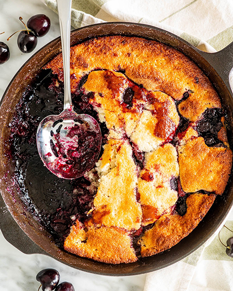

Cherry Cobbler

Description
This was handed down by my Grandmother. You can use any kind of fruit filling. If using cherry, pie filling can be substituted with 2 cups fresh cherries.
Ingredients
- 1/2 cup butter
- 1 cup all-purpose flour
- 1 cup white sugar
- 1 teaspoon baking powder
- 1 cup milk
- 21oz can cherry pie filling
Steps
- Preheat oven to 275 degrees F (135 degrees C). Place butter or margarine in a 9x13 inch baking dish and set on oven rack to melt.
- In a medium bowl, mix together flour, sugar, and baking powder. Stir in milk.
- Remove baking dish from oven as soon as butter or margarine is melted. Pour flour mixture into dish, but DO NOT STIR. Pour fruit evenly into pan, and DO NOT STIR.
- Raise oven temperature to 350 degrees F (175 degrees C). Bake cobbler for 50 to 60 minutes, until golden brown.